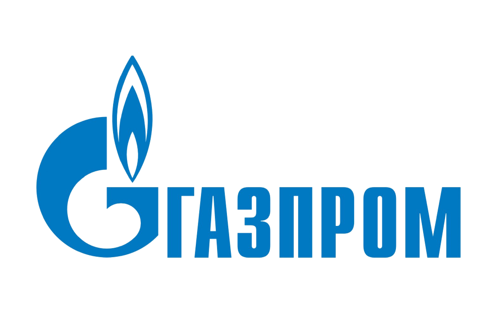

1 Сбербанк
Банк с самым большим количеством клиентов в России. Приносит стабильную прибыль и каждый год увеличивает выручку. При этом имеет высокую маржинальность бизнеса на уровне ~30 % и дивидендную доходность почти 10 % в год.
Бизнес стабильный и развивается в различных направлениях таких, как такси, доставка еды (Delivery Club), спортивные трансляции и развлечения (okko) + брокерское приложение сбербанка с бурным ростом интереса к инвестициям приносит много прибыли.
Капитализация: 4 651 млрд. рублей

2 Роснефть
С недавних пор Роснефть обогнала по капитализации Газпром и теперь занимает 1 место среди нефтегазовых компаний России.
Роснефть занимается поиском и разведкой новых месторождений углеводородов, и, конечно, непосредственной добычей нефти и газа. Компания делает упор на эффективную добычу на месторождениях углеводородов и увеличения её объемов посредством развития технологий и проектного управления.
Выручка компании растет в среднем на 9,5 % за последние 5 лет, а средний дивидендный доход составляет около 7 %.
Капитализация: 4 046 млрд. рублей
3 Газпром
Компания занимается добычей, транспортировкой и реализацией газа. Газпром занимает лидирующие позиции по производству природного газа в России и во всем мире. Большую часть рынка сбыта составляет РФ и около трети всего объема поставок приходится на Европу.
Основные направления деятельности — разведка новых месторождений природного газа, его добыча, транспортировка, хранение, переработка и реализация, и производство и сбыт тепло- и электроэнергии.
Стабильная прибыль на протяжении более 10 лет, средний годовой рост выручки 6,5 % и див. доход 9 % за последние 5 лет.
Капитализация: 3 962 млрд. рублей

4 Новатэк
Компания ведет деятельность по добыче природного газа. Вторая по объемам газодобычи. В отличие от Газпрома, является независимым производителем газа (50 % Газпрома принадлежит государству).
Одна из самых низких себестоимостей добычи газа и инвестиции в программы строительства новых заводов делают компанию очень перспективной и привлекательной для покупки акций.
Новатэк очень быстро наращивает выручку с 2004 года. Средний рост выручки почти 20 % за последние 5 лет. Акции компании выросли почти в 2 раза с 2017 года и продолжают наращивать темп роста. Див. доходность на уровне 2,5-3 % в год.
Капитализация: 3 310 млрд. рублей
5 Норильский Никель
Занимается добычей и реализует такие металлы, как никель, палладий и платина. За счет больших дивидендов и перспектив на будущее, связанных с тем фактом, что никель и палладий будут востребованы в будущем при производстве электромобилей и нержавеющей стали, акции компании выросли более чем на 150 %.
Является одним из крупнейших мировых лидеров по производству:
- никеля — 14 % мирового производства,
- палладия — 45%,
- платины — 15 %.
Рост выручки 14 % за последние 5 лет, маржинальность бизнеса 20-25 % — довольно большая для добывающей компании и средний дивидендный доход 10,5 %.
Капитализация: 3 130 млрд. рублей